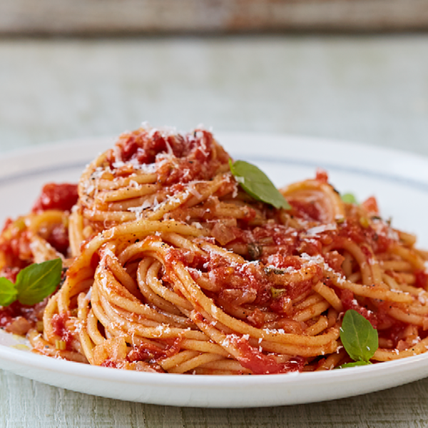

Sushi
- Rice
- Fish
- Soy sauce
- Cheese
- Sesame
- Cucumber
- Wasabi
- Nori
You need to take 300 g of rice, boil it for 20 minutes.
Chop the fish into small
pieces.
Add cucumber, sesame seeds, cheese.
Wrap everything in Nori.
Sprinkle with sesame seeds.
Serve with wasabi and soy sauce.

Pasta
- Spaghetti
- Tomatoes
- Parmesan
- Butter
- Salt
- Garlic
Fill large Dutch oven or pot with cold water 3/4 full and bring to a boil.
Add 2 tsp salt and spaghetti.
Separate pasta with tongs a few times during first 2 minutes of cooking to ensure it does not stick.
Keep
cooking uncovered for 5 more minutes or until al dente, stirring occasionally.
Serve with Parmesan cheese.
